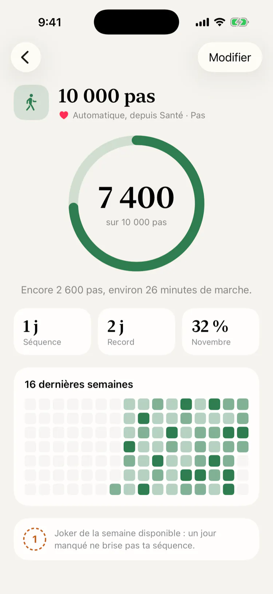

Coutume — Suivi d’habitudes pour iPhone
Tiens tes habitudes, un jour à la fois.
Les bonnes à prendre, les mauvaises à laisser : un toucher pour noter, et Santé compte tes pas. Gratuite, sans compte, sans pub et sans abonnement.

Touche l’anneau, c’est noté.
Les habitudes de ta journée, chacune avec son anneau. Une habitude qui se compte, comme 8 verres d’eau, en ajoute un à chaque toucher ; maintiens l’anneau pour entrer un nombre ou annuler.
Santé compte tes pas pour toi.
Tes pas, tes minutes d’exercice, ta pleine conscience et ton eau se notent seuls. Chaque habitude garde sa séquence et tout son historique.

Les mauvaises habitudes, comptées en jours sans.
Une habitude à éviter est tenue d’office : tu ne notes que le jour où tu craques. Coutume compte tes jours sans, l’argent économisé et les envies auxquelles tu as résisté.

Des niveaux et des jalons pour chaque journée tenue.
Onze niveaux, de Bonne intention à Légende, dix-huit jalons à célébrer, et une séquence qui pardonne un jour manqué par semaine.

Ton mois, jour après jour.
Un calendrier de chaque journée, plus vif quand plus d’habitudes ont été tenues, et des widgets pour ton écran d’accueil.

Toutes les fonctionnalités.
Un toucher
Touche l’anneau, c’est noté
Santé
Tes pas et ton eau se notent seuls
À prendre ou à éviter
Des anneaux à remplir, des jours sans à compter
Séquences indulgentes
Un jour manqué par semaine, pardonné
Niveaux
De Bonne intention à Légende
Jalons
Dix-huit à gagner et à célébrer
Calendrier
Ton mois, jour après jour
Widgets
Tes anneaux sur l’écran d’accueil
Synchro iCloud
Tes habitudes dans ton iCloud privé
Gratuite
Sans compte, sans pub, sans abonnement
Questions fréquentes.
Coutume est-elle gratuite ?
Oui. Coutume est gratuite, sans publicité, sans abonnement et sans compte.
Faut-il un compte ?
Non. Coutume fonctionne sans compte ni inscription. Tes habitudes sont enregistrées sur ton iPhone et synchronisées avec ton iCloud privé, auquel nous n’avons pas accès.
Comment noter une habitude ?
Touche son anneau. Une habitude qui se compte, comme 8 verres d’eau, en ajoute un à chaque toucher ; maintiens l’anneau pour entrer un nombre ou annuler. Les pas, les minutes d’exercice, la pleine conscience et l’eau peuvent se remplir seuls depuis Santé.
Comment fonctionnent les habitudes à éviter ?
Chaque journée compte comme tenue, sauf si tu notes un écart. Coutume compte tes jours sans, l’argent économisé et les envies auxquelles tu as résisté. Un écart remet le compteur à zéro, jamais ton mois ni ton niveau.
Et si je manque une journée ?
Ta séquence pardonne un jour manqué par semaine. Au-delà, elle repart à zéro, mais ton niveau et tes jalons restent : ils comptent chaque journée tenue.
Que lit Coutume dans Santé ?
Seulement ce que tu autorises : les pas, les minutes d’exercice, la pleine conscience et l’eau. Coutume n’écrit jamais dans Santé, et tes totaux restent sur ton iPhone et dans ton iCloud.
Et si je change d’iPhone ?
Tes habitudes se synchronisent avec ton iCloud et reviennent sur ton nouvel iPhone, avec tout leur historique, tes niveaux et tes jalons.
Coutume est-elle sur Android ?
Non. Coutume arrive bientôt sur iPhone, en français, en anglais et en espagnol.
D’autres questions ? Visite l’assistance.
Guides.
- Alternative à Streaks
Coutume comparée à Streaks, l’app d’habitudes payante pour appareils Apple
- Alternative à Habitify
Coutume comparée à Habitify, l’app d’habitudes aux forfaits gratuit et payants
- Alternative à Habitica
Coutume comparée à Habitica, l’app d’habitudes en forme de jeu de rôle
- Suivi d’habitudes avec Santé
Pas, exercice, pleine conscience et eau, remplis par Santé
- Arrêter les boissons énergisantes
Compte tes jours sans boisson énergisante et l’argent économisé
- Arrêter de vapoter
Tes jours sans vapoter, l’argent économisé et les envies résistées
- Compteur de jours sans
Un compteur de jours sans pour tout ce que tu veux arrêter
- Suivi de l’eau
Compte tes verres d’eau d’un toucher, ou laisse Santé le faire
- App d’habitudes gratuite
Gratuite pour vrai : sans abonnement, sans pub, sans compte
- Widget d’habitudes
Les anneaux du jour sur ton écran d’accueil et ton écran verrouillé
- Idées d’habitudes
40 idées de bonnes habitudes à prendre et de mauvaises à laisser
- Combien de temps pour une habitude
Ce que dit la recherche sur le mythe des 21 jours, et pourquoi un jour manqué ne compte pas
Tu aimeras aussi.
- Reliure
Toutes tes lectures, reliées
- Arpente
Chaque pas raconte un parcours (bientôt)
- Porcom
Un petit journal pour tout ce que tu regardes
- Dernier Verre
Un dernier, parfaitement dosé (bientôt)
Des mêmes créateurs.
- Puuunch
Suivi du temps et feuilles de temps pour petites équipes.
- Makearesu.me
Crée un CV en 5 minutes